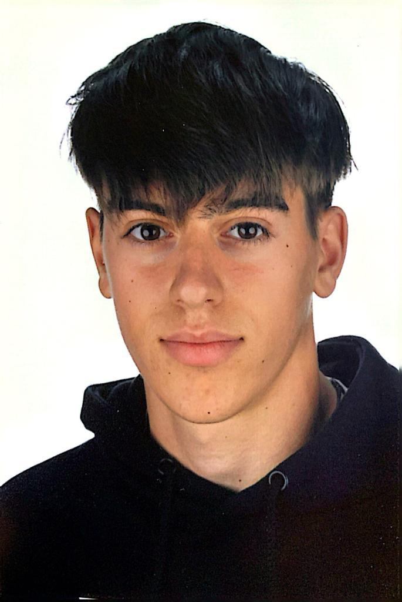

Sobre Mi

Xavi Balletbó Escorihuela
Desenvolupador Web
+34 695 88 51 27
xaviballetbo.xb@gmail.com
Carrer Verge dels Desamparats 35, Lleida
Informació Personal
Soc un noi de 18 anys i actualment estudio el primer curs del Cicle Formatiu de Grau Superior en Desenvolupament d'Aplicacions Web (DAW). Em considero una persona compromesa, treballadora i discreta. Valoro molt l'autonomia i l'aprenentatge constant, motiu pel qual he combinat els estudis amb diverses feines temporals, com ara la d'àrbitre, una activitat que continuo exercint a dia d'avui.
Tinc moltes ganes de créixer, tant a nivell personal com professional, dins del món tecnològic, i per això afronto cada nova oportunitat amb motivació, ganes d'aprendre i de seguir formant-me.
Experiència Laboral
- Àrbitre de bàsquet Federació Catalana de Bàsquet – Lleida Setembre 2022 – Actualment
- Treball temporal Fruiteria La Pràctica – Lleida Juliol 2023 – Setembre 2023
- FCT Compsa Online – Lleida Gener 2024 – Juny 2024
Educació
- ESO Col·legi Mirasan – Lleida Setembre 2018 – Juny 2022
- Cicle Formatiu Grau Mitjà SMIX (Informàtica) Centre Ilerna – Lleida Setembre 2022 – Juny 2024
- Cicle Formatiu Grau Superior DAW (Informàtica) Institut Caparrella – Lleida Setembre 2024 – Actualment
Habilitats i Idiomes
Habilitats Personals:
Treball en equip
Proactivitat
Adaptació al canvi
Capacitat per prendre decisions
Resolució de problemes
Empatia
Creativitat
Tolerància a la pressió
Compromís
Capacitat d'aprenentatge
Idiomes:
Català: Natiu
Castellà: Natiu
Anglès: Intermig
Habilitats Tècniques:
HTML
CSS
JavaScript
Disseny Responsive
Java
Trello
Certificats i Llicències
- Títol d'ESO
- Cicle Mitjà SMIX